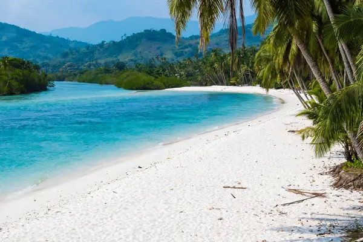

🏖️ Pristine Beaches
Africa's best beaches - River No.2, Tokeh, and Bunce. White sand meets blue Atlantic.
Discover the Lion Mountains. From golden beaches to misty rainforests, Sierra Leone awaits in Green, White and Blue.
Explore Places
Africa's best beaches - River No.2, Tokeh, and Bunce. White sand meets blue Atlantic.
Bunce Island, Freedom history, Krio culture. A nation of unity and resilience.
Tacugama chimps, Gola rainforest, green mountains touching the blue sky.
15 curated destinations across Sierra Leone. All information in one place.
Contact Us